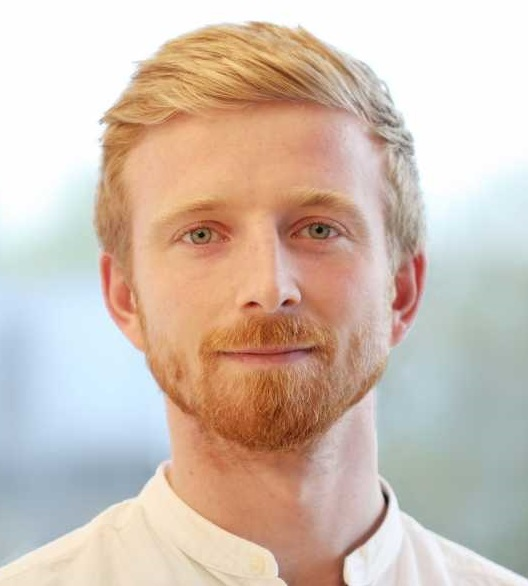

Synergistic degradation of fucoidans in the ocean
I am a microbial ecologist that studies the adaptation, diversification and dynamics of microbes across environmental gradients.

I've been captivated by the diversity of life on Earth since childhood, when nature documentaries such as Blue Planet first sparked my imagination. That fascination eventually led me to Plymouth University to study Marine Biology and Physical Oceanography. It was a single microbiology lecture, though, that changed everything, revealing an entire world of life I had barely considered before. Determined to learn more, I moved to the Max Planck Institute in Bremen for a master's in Marine Microbiology, where eighteen months of steep learning revealed just how little I'd understood about the microbial world, and made clear this was where I wanted to spend my career. A PhD in the same department followed, focused on characterising microbial life at the boundary between the Arctic and Atlantic Oceans. From there, I moved to ETH Zürich as a postdoctoral researcher, where my research grew beyond the oceans to where it remains today: asking how microbial life across Earth's biomes has diversified, adapted and evolved.
Microorganisms are the most abundant and diverse living entities on the planet, thriving in every imaginable environment, from deep-sea hydrothermal vents to arid deserts. Over billions of years, they have evolved remarkable adaptations that allow them to flourish in these varied ecosystems, shaping the world as we know it.
As a microbial ecologist, I seek to understand the extent and structuring of microbial diversity on Earth today, and how it diversifies and adapts in response to environmental conditions. My research began by combining fieldwork, molecular techniques, and bioinformatics to address these questions from the ground up; more recently, it has evolved toward global-scale metagenomic analysis combined with new computational frameworks and advanced statistical approaches to resolve and rigorously test biological signal beyond the reach of current methods.
Structuring of the taxonomic and functional diversity of microbiomes | Dynamics of microbes across environmental gradients | Genomic adaptations - mutations to gene content | Sub-species diversification
Physicochemical gradients | Interactions with mobile genetic elements